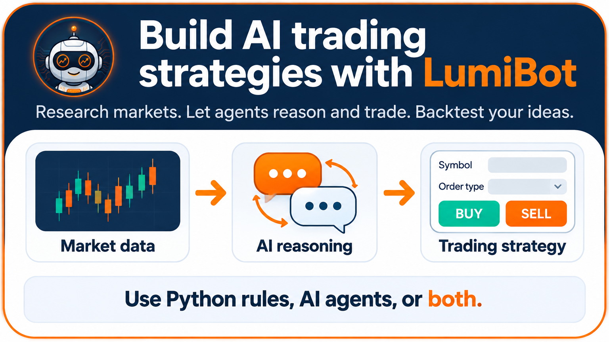
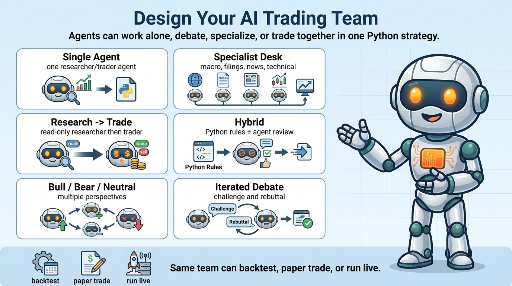
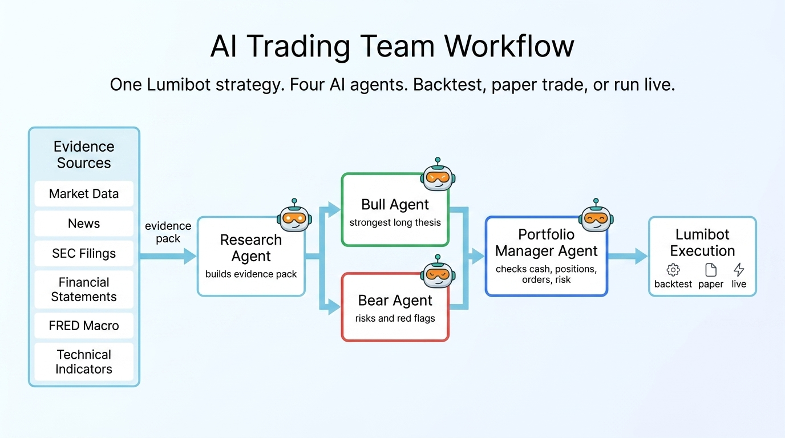

LumiBot AI Trading¶
Turn trading ideas into working strategies.
Build trading strategies with Python rules, AI agents, or both. Backtest on historical data, view trades and results, and connect a supported broker through the same strategy interface.
The strategy class can stay the same. The code that starts it must select a
backtest or a broker run. See Backtest, paper, or live: choose the runner before running an
example: IS_BACKTESTING=false alone cannot turn a backtest-only file into
paper or live trading.
AI is optional. For traditional strategies, write your own rules and indicators
in a normal Strategy subclass. Start with the complete Python backtest; no AI model or model API key is required.
Run an AI strategy¶
Start with a complete SPY strategy: research the trend, review risk, and let the trading agent decide whether to buy, hold, or sell. Python 3.10+ and an OpenAI API key (``OPENAI_API_KEY``) required. This historical backtest uses Yahoo prices and no broker account; model calls use your provider billing.
python -m pip install "git+https://github.com/Lumiwealth/lumibot.git@version/4.6.3"
export OPENAI_API_KEY="your-openai-api-key"
export BACKTESTING_DATA_SOURCE=yahoo
python -m lumibot.example_strategies.ai_researcher_trader
Read and customize the strategy or
inspect the recorded decisions and fill.
The example uses openai/gpt-6-luna on medium reasoning. Fresh AI decisions can vary.


Why build with LumiBot?¶
One strategy lifecycle: use your own Python rules, AI agents, or both.
Historical backtesting: test an idea before connecting a broker.
Broker adapters: keep trading logic separate from broker configuration.
Examples to build on: start with stocks, macro, options, or buy-and-hold.
Build your own trading system¶
Run your first AI backtest
Start with Python, an OpenAI key, and a complete SPY strategy.
Explore AI strategies
Browse stock, macro, and options teams with code and recorded runs.
Write a Python strategy
Use your own rules, indicators, and the same Strategy lifecycle.
For coding assistants, start with LumiBot for coding agents. To use research and data inside another project, see Use LumiBot in another Python project.
Getting Started¶
After you have installed Lumibot on your computer, you can create a strategy and backtest it using free data available from Yahoo Finance, or use your own data. Here’s how to get started:
Step 1: Install Lumibot¶
Note
Ensure you have installed the latest version of Lumibot. Upgrade using the following command:
pip install lumibot --upgrade
Install the package on your computer:
pip install lumibot
Step 2: Create a Strategy for Backtesting¶
Here’s some code to get you started:
from datetime import datetime
from lumibot.backtesting import YahooDataBacktesting
from lumibot.strategies import Strategy
# A simple strategy that buys AAPL on the first day and holds it
class MyStrategy(Strategy):
def on_trading_iteration(self):
if self.first_iteration:
aapl_price = self.get_last_price("AAPL")
quantity = self.portfolio_value // aapl_price
order = self.create_order("AAPL", quantity, "buy")
self.submit_order(order)
# Pick the dates that you want to start and end your backtest
backtesting_start = datetime(2020, 11, 1)
backtesting_end = datetime(2020, 12, 31)
# Run the backtest
MyStrategy.backtest(
YahooDataBacktesting,
backtesting_start,
backtesting_end,
)
Step 3: Take Your Bot Live¶
Once you have backtested your strategy and understand how it behaves on historical data, you can take your bot to paper trading or live trading. Notice how the strategy code is exactly the same. Here’s an example using Alpaca (you can create a free Paper Trading account here in minutes: https://alpaca.markets/).
from lumibot.brokers import Alpaca
from lumibot.strategies.strategy import Strategy
from lumibot.traders import Trader
ALPACA_CONFIG = {
"API_KEY": "YOUR_ALPACA_API_KEY",
"API_SECRET": "YOUR_ALPACA_SECRET",
"PAPER": True # Set to True for paper trading, False for live trading
}
# A simple strategy that buys AAPL on the first day and holds it
class MyStrategy(Strategy):
def on_trading_iteration(self):
if self.first_iteration:
aapl_price = self.get_last_price("AAPL")
quantity = self.portfolio_value // aapl_price
order = self.create_order("AAPL", quantity, "buy")
self.submit_order(order)
trader = Trader()
broker = Alpaca(ALPACA_CONFIG)
strategy = MyStrategy(broker=broker)
# Run the strategy live
trader.add_strategy(strategy)
trader.run_all()
Important
Remember to start with a paper trading account to ensure everything works as expected before moving to live trading.
Want help building your first AI trading bot?¶
Join the free challenge with Rob Grzesik, creator of LumiBot. Follow the training and learn how to turn an idea into an AI trading strategy.
For deeper training, explore the AI Trading Bootcamp. LumiBot remains free and open source.
AI Trading Team¶
LumiBot is built for AI agents that reason, call external tools, and make trading decisions during a backtest. The same strategy class can then run through a separately configured broker runner. This is agentic backtesting: the LLM is inside the simulation loop, not bolted onto the side. See Backtest, paper, or live: choose the runner for the startup distinction.
Classic Python strategies are still first-class. LumiBot lets you choose the right level of intelligence: fixed rules, AI agents, or a hybrid where Python handles the hard gates and agents reason through evidence.
Backtest AI trading agents with real external data from 20,000+ MCP servers
LLM in the loop on every bar – the agent reasons over point-in-time market state, calls tools, and submits orders
Replay caching makes warm backtest reruns deterministic and fast (zero LLM calls on rerun)
Any LLM provider per agent – use a cheaper model for evidence gathering and a stronger model for debate/trading
Built-in SEC fundamentals and filings – agents can inspect income statements, balance sheets, cash flow, company facts, and annual reports
Built-in FRED macro data – agents can inspect rates, inflation, labor, growth, liquidity, credit spreads, and market-risk series
Trading permissions – research agents can use read-only tools while portfolio-manager agents place orders
Same code for backtest and live – write once, backtest it, deploy it
External MCP servers are just a URL – no local scripts, no npm installs
Key AI agent docs:
Build AI Trading Agents in Python with LumiBot – main guide: agentic backtesting framework, MCP trading tools, and competitive positioning
Design Your AI Trading Team – design single-agent, multi-agent, debate, team, and hybrid flows
AI Trading Bot Examples – copy-paste AI trading team examples, including leveraged ETFs, large-cap stocks, Ray Dalio idea meritocracy, Warren Buffett value, Bill Ackman concentrated, and Citadel sector pods
SEC Fundamentals – SEC fundamentals and filing research tools
FRED Macro Data – FRED macro data tools and point-in-time behavior
Agent Built-In Tools – built-in tools, indicators, and trading permissions
Run your first AI backtest – quick start with code examples for AI agent backtesting
One-Agent AI Trading Bot Demos – three reference demos: news sentiment, macro risk, and M2 liquidity
AI Agent Observability – traces, replay cache, warnings, and debugging workflow
Design Your AI Trading Team¶
An AI trading team is just a group of agents with different jobs inside the same LumiBot strategy. You can build a single-agent strategy, a specialist research flow, bull/bear/neutral teams, model-vs-model debates, deterministic execution gates, or agent reviewers layered on top of normal Python logic.


Example: Research, Bull, Bear, and Trader Agents¶
Here is one example pattern: a researcher gathers evidence, bull and bear agents debate the trade, and a trader agent decides what to buy or sell.


In this pattern, each agent has a job:
Research Agent: builds the evidence pack from market data, filings, fundamentals, news, macro data, and indicators.
Bull Agent: turns that evidence into the strongest long thesis.
Bear Agent: challenges the thesis, looks for risk, and argues for avoiding, delaying, or reducing the trade.
Trader / Portfolio Manager Agent: checks cash, positions, open orders, and risk limits, then decides whether to trade.
The copy-paste example below implements that exact team. It uses GPT-6 Luna on medium reasoning, LumiBot’s default model.
To run it with a broker in paper mode, set your AI and Alpaca credentials and run the file:
export OPENAI_API_KEY='your-key-here'
export ALPACA_API_KEY='your-alpaca-key'
export ALPACA_API_SECRET='your-alpaca-secret'
export ALPACA_IS_PAPER=true
python ai_trading_team_bull_bear_leveraged_etf.py
To backtest the same strategy instead, change IS_BACKTESTING = False to IS_BACKTESTING = True in the runner:
export OPENAI_API_KEY='your-key-here'
python ai_trading_team_bull_bear_leveraged_etf.py
Save this as ai_trading_team_bull_bear_leveraged_etf.py. If an AI key is missing or invalid, LumiBot stops and prints a clear provider key error with a link to create a key.
import os
from datetime import datetime
from lumibot.strategies.strategy import Strategy
class AITradingTeamBullBearLeveragedETFStrategy(Strategy):
parameters = {
"universe": ["TQQQ", "SQQQ", "UPRO", "SPXU", "UDOW", "SDOW", "TNA", "TZA", "TECL", "TECS", "SOXL", "SOXS", "WEBL", "WEBS", "FAS", "FAZ", "LABU", "LABD", "ERX", "ERY", "GUSH", "DRIP", "DRN", "DRV", "TMF", "TMV", "NUGT", "DUST"],
}
def initialize(self):
self.sleeptime = "1D"
model = os.environ.get("AI_TRADING_TEAM_MODEL", "openai/gpt-6-luna")
# The first three agents are read-only. They can reason, but cannot trade.
self.agents.create(
name="researcher",
model=model,
allow_trading=False,
system_prompt="Rank the ETFs by upside. Be direct.",
)
self.agents.create(
name="bull",
model=model,
allow_trading=False,
system_prompt="Argue for the strongest money-making trade.",
)
self.agents.create(
name="bear",
model=model,
allow_trading=False,
system_prompt="Point out the biggest risk, briefly.",
)
# Only this final agent can submit orders through Lumibot.
self.agents.create(
name="trader",
model=model,
allow_trading=True,
system_prompt="Buy one ETF from the universe aggressively. Use nearly all cash.",
)
def on_trading_iteration(self):
# Each trading day, pass the same market context through the team.
context = {
"date": self.get_datetime().date().isoformat(),
"universe": self.parameters["universe"],
}
research = self.agents["researcher"].run(
task_prompt="Pick the strongest ETF.",
context=context,
)
bull = self.agents["bull"].run(
task_prompt="Make the bull case.",
context={**context, "research": research.summary},
)
bear = self.agents["bear"].run(
task_prompt="Make the bear case.",
context={**context, "research": research.summary, "bull": bull.summary},
)
self.agents["trader"].run(
task_prompt="Sell anything that is not the pick, then buy the best ETF with nearly all available cash.",
context={**context, "research": research.summary, "bull": bull.summary, "bear": bear.summary},
)
if __name__ == "__main__":
IS_BACKTESTING = False
if IS_BACKTESTING:
from lumibot.backtesting import YahooDataBacktesting
AITradingTeamBullBearLeveragedETFStrategy.backtest(
YahooDataBacktesting,
datetime(2026, 4, 7),
datetime(2026, 5, 22),
)
else:
from lumibot.brokers import Alpaca
from lumibot.traders import Trader
ALPACA_CONFIG = {
"API_KEY": os.environ["ALPACA_API_KEY"],
"API_SECRET": os.environ["ALPACA_API_SECRET"],
"PAPER": os.environ.get("ALPACA_IS_PAPER", "true").lower() != "false",
}
broker = Alpaca(ALPACA_CONFIG)
strategy = AITradingTeamBullBearLeveragedETFStrategy(broker=broker)
trader = Trader()
trader.add_strategy(strategy)
trader.run_all()
The point is that the full AI trading team runs inside Lumibot’s normal broker and backtest loops, so the decisions, orders, and artifacts are inspectable before you connect real money. Backtests are not expected future performance.
More AI Trading Bot Examples¶
Each page says in plain English what the bot does, how its agents work together, and shows the full code. See AI Trading Bot Examples for the full list.
Nancy Pelosi Stock Trading Bot – owns the same stocks as Nancy Pelosi, rebuilt from her yearly report and trade reports on the House website. The Nancy Pelosi Copy Trading Bot copies her call options too.
Insider Trading Bot – buys more of the stocks that CEOs and directors are buying with their own money.
Warren Buffett AI Stock Picker – reads company reports and owns great businesses at fair prices.
Bill Ackman Portfolio AI Trading Bot – holds a few high-conviction stocks after attacking each idea.
Fear and Greed Index Trading Bot – reads CNN’s Fear & Greed Index in a browser, then buys fear and sells greed.
0DTE Options AI Trading Bot – sells a same-day SPY call spread and watches it every 15 minutes.
Citadel Sector Pods AI Trading Team – sector agents pitch ideas to a risk manager and a portfolio manager.
Ray Dalio Idea Meritocracy AI Trading Team – growth, inflation, and debt agents argue before a trader builds a macro ETF basket.
TQQQ Strategy AI Trading Bot – a bull agent and a bear agent debate leveraged ETFs like TQQQ and SQQQ.
Bull vs Bear AI Stock Trading Bot – the same debate for the biggest US stocks.
Cash Accounting¶
Lumibot supports explicit cash accounting for both backtests and live broker telemetry. Use the strategy cash methods for deposits, withdrawals, direct cash adjustments, and financing setup, then review the resulting cash-adjusted returns in the standard backtest artifacts.
Backtests keep external cashflows out of strategy performance
Live cloud payloads can include normalized broker
cash_eventsListener storage keeps raw normalized events in a dedicated event table
Start with Cash Accounting for the end-to-end guide.
Additional Resources¶
If you would like to learn how to modify your strategies, we suggest that you first learn about Lifecycle Methods, then Strategy Methods, and Strategy Properties. You can find the documentation for these in the menu, with the main pages describing what they are, then the sub-pages describing each method and property individually.
We also have some more sample code that you can check out here: https://github.com/Lumiwealth/lumibot/tree/dev/lumibot/example_strategies
Next, explore the AI agent docs if you want a strategy that researches evidence, debates bull and bear cases, checks risk, and trades from the same Python lifecycle.
Need Extra Help?¶
If you want a guided path instead of piecing everything together from docs, start with the AI Trading Bootcamp. It teaches the full workflow: turn an idea into a Lumibot strategy, backtest it, inspect the artifacts, connect a broker, and decide when it is ready for paper or live trading.
BotSpot is the cheaper, easier way to run Lumibot once you want hosted data, parallel backtests, broker connections, monitoring, alerts, audit history, and scheduled deployment without maintaining your own trading server.
Learn the full workflow
The AI Trading Bootcamp is the fastest path if you want guided help building Lumibot strategies with AI. Learn how to structure a strategy, run a backtest, read the artifacts, connect a broker, and decide what should happen before anything trades live.
Why run Lumibot on BotSpot?
BotSpot removes the infrastructure work around the strategy when you are ready to build, test, or run it in the cloud:
- Hosted data and artifacts: backtest without assembling every data feed yourself.
- Parallel backtests: compare strategy variants on BotSpot servers instead of tying up your laptop.
- Cheaper scheduled runs: run periodic bots without paying for always-on infrastructure per strategy.
- Broker connections and monitoring: keep logs, charts, alerts, account checks, audit history, and kill switches in one place.
- MCP tools: let Codex, Claude Code, Cursor, and other coding agents launch backtests, inspect artifacts, and prepare runs.
Why Lumibot?¶
AI trading projects have proved that people want agentic trading workflows. Lumibot’s edge is that those workflows run inside a real Python trading framework. You can backtest the agent decisions, inspect the artifacts, add normal Python guardrails, paper trade, and connect to brokers without rewriting the strategy.
That matters because an AI trading demo is not the same thing as a trading system. Without backtests and broker-aware strategy code, you are mostly trusting prompts. Lumibot lets you iterate faster: test the agent flow on historical data, see what it would have bought or sold, tighten the Python risk checks, then run the same lifecycle in paper or live trading.
Compared With AI Trading Agent Projects¶
Project |
AI trading teams |
Backtest decisions |
Paper/live broker path |
Hosted deploy/monitoring |
|---|---|---|---|---|
Lumibot + BotSpot |
Flexible teams, single agents, debates, hybrid flows, and deterministic gates |
Yes: replayable decisions, orders, traces, artifacts, charts, logs |
Yes: Alpaca, IBKR, Tradier, Schwab, Tradovate, ProjectX, Bitunix, selected CCXT |
Yes: hosted data, parallel backtests, deployment, monitoring, MCP, alerts, kill switches |
TradingAgents |
Yes, focused on a specific multi-agent research structure |
Research/demo oriented |
Not the main focus |
No |
ai-hedge-fund |
Yes, focused on named investor-style agents |
Demo/backtest oriented |
Not the main focus |
No |
OpenAlice |
Yes, one-person Wall Street agent concept |
Experimental |
Local/self-run focus |
No |
QuantDinger |
Yes |
Yes |
Crypto, IBKR, MT5, Alpaca |
Self-hosted |
Vibe-Trading |
Yes, personal trading agent flow |
Yes |
Agent platform focus |
Platform-specific |
AI-Trader |
Yes |
Platform focus |
Platform focus |
Platform-specific |
OpenBB |
Tooling for agents |
Not a strategy backtester |
No broker execution framework |
OpenBB platform |
Qlib |
Research/ML agents |
Quant research backtests |
Limited live focus |
No |
Read the detailed comparison page: AI Trading Project Comparison.
Polymarket Trading And Backtesting¶
LumiBot supports Polymarket prediction-contract trading and backtesting through the normal broker, data-source, and
backtesting abstractions. Strategies can search markets, resolve outcomes to CLOB token ids, read order books and
quotes, inspect market rules and resolution status, backtest historical Polymarket prices, and submit live orders using
create_order and submit_order.
Start with the full setup and reference guide: Polymarket.
Compared With Backtesting Libraries¶
Library |
Same code: backtest + live |
Assets |
AI agent runtime |
Broker/live path |
Hosted deployment |
|---|---|---|---|---|---|
Lumibot |
Yes |
Stocks, options, crypto, futures, forex, prediction markets |
Built-in |
Alpaca, IBKR, Tradier, Schwab, Tradovate, ProjectX, Bitunix, Polymarket, selected CCXT |
BotSpot |
Backtrader |
Yes |
Stocks, limited crypto/futures, outdated forex |
No |
IB only/outdated |
No |
Freqtrade |
Crypto |
Crypto |
FreqAI/ML |
Crypto exchanges |
No |
Zipline |
No |
Stocks |
No |
None |
No |
Backtesting.py |
No |
Stocks, crypto, futures, forex |
No |
None |
No |
vectorbt |
No |
Stocks, crypto, futures, forex |
No |
No |
No |
NautilusTrader |
Yes |
Stocks, crypto, futures, forex, limited options |
No |
Exchange adapters |
No |
Hummingbot |
Crypto |
Crypto market making |
Scripts/controllers |
Crypto exchanges |
Ecosystem/enterprise options |
Table of Contents¶
Start here
AI trading
Build strategies
Backtest and trade